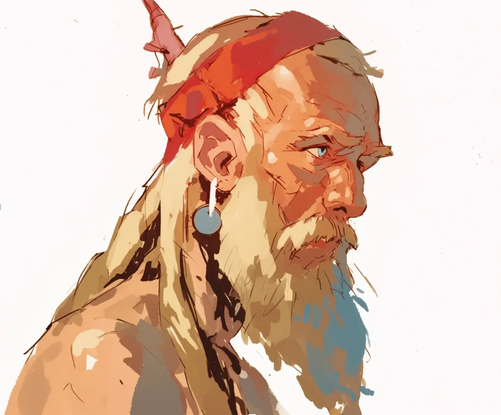

시장의 웅성거림 속에서 그는 숨었다. 수십 년을 그래왔듯이.
[He hid within the market’s murmur. As he had for decades.]
붉은 천이 뿔을 가렸다. 사람들은 못 봤다. 보려 하지 않았다.
[Red cloth covered the horn. People didn’t see. Didn’t want to.]
“오래도 버텼구나.”
[”You’ve endured long.”]
울프릭이 멈췄다. 노파가 올려다보고 있었다. 흰 머리카락, 작은 몸. 하지만 그 눈—
[Ulfrik stopped. An old woman looked up at him. White hair, small frame. But those eyes—]
무당이었다.
[A shaman.]
“뭘 원하시오.” 목소리를 낮췄다.
[”What do you want.” He lowered his voice.]
해원이라는 이름의 노파가 고개를 기울였다.
[The old woman named Haewon tilted her head.]
“네 뿔이 울고 있어.”
[”Your horn is weeping.”]
손이 이마로 갔다. 천 아래, 뿔이 축축했다. 피.
[His hand went to his forehead. Under the cloth, the horn was wet. Blood.]
“때가 됐어.” 해원이 속삭였다. “그게 널 부르고 있어.”
[”The time has come.” Haewon whispered. “It’s calling you.”]
“뭐가.”
[”What is.”]
“네가 죽인 것.” 그녀의 눈동자가 하얗게 뒤집혔다. “아니—죽였다고 믿은 것.”
[”What you killed.” Her pupils rolled white. “No—what you believed you killed.”]
시장의 소리가 사라졌다. 사람들도.
[The market’s sound vanished. So did the people.]
둘만 남았다.
[Only the two remained.]
울프릭은 칼에 손을 대지 않았다. 소용없다는 걸 알았으니까.
[Ulfrik didn’t reach for his blade. He knew it was useless.]
“어디로 가야 하오?”
[”Where must I go?”]
해원이 북쪽을 가리켰다. 손가락이 갈라지고 피가 맺혔다.
[Haewon pointed north. Her finger split and blood beaded.]
“시작한 곳으로. 끝내러.”
[”To where you began. To finish it.”]
그는 고개를 끄덕였다. 뿔에서 피가 턱을 타고 흘렀다.
[He nodded. Blood from the horn ran down his jaw.]
처음이자 마지막 여정.
[The first and final journey.]